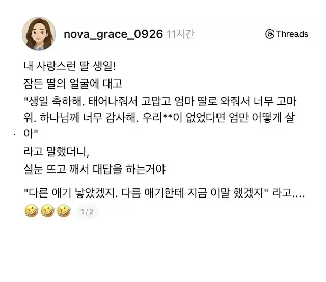

대문자 T딸래미.JPG
댓글
믿거쓰..
친구없는 애들 말투가 딱 저럼
난가
찐따화법
어린애 같은데 천잰데?
잘받아치네 ㅋㅋㅋㅋ
ㅋㅋㅋㅋㅋㅋㅋㅋ
시니컬한 애기들 너무 귀여워 뽀뽀 갈겨서 내 뮤탄스 균 전염시켜버릴거야
if
맞긴 한디
기여어
내 아이에게 사탄이 들렸어.. 오.. 주여...
아 글킨하지 ㅋㅋㅋㅋㅋㅋㅋㅋ
거 좋게좋게좀 넘어갑시다
ㅆ
뭔가 존재론적이네 ㅋㅋㅋ
귀엽다 ㅋ
우리딸 T야?
ㅋㅋ
다른애 낳았어야 했겠네
"다른 애는 그런식으로 답 안했으려나.."
??? : 너 6년살고 돌아갈래?
??? : 엄마 나 잘거야 나가
근데 궁금한게 T들은 왜 저런식으로 말하는거임? 부끄러워서 괜히 더 그러나?
자는데 말걸어서
모든 t가 그렇진 않아.. 다만 제정신일땐 뇌에 필터링 한번 거치고 사회화된 대답을 하는거고 저건 필터링 없어서 그런걸거야
그것이 사실이니까
뭔가 진심이 아니라 순간적인 감정에 휘둘려서 하는 말 같으니까 그런거 같음
물론 F는 그 순간 진심이었겠지만
T는 감정에 휘둘리지 않음 저건 평온한 상태임
아니 f가 감정에 휘둘려서 하는 말을 보는 t가 맥을 끊는거란 뜻
애초에 엄마의 저 말이 크게 와닿지가 않아 그냥 그런가보다 하는 정도고 사회화 되어서 그에대한 리액션을 해야 한다는걸 알아서 해주는거지 솔직히 마음으로 벅차다던가 하는 감정은 없음 차라리 엄청 가지고 싶었던걸 선물 받거나 말로 해줄거라면 먼가 개인적인 인정이나 칭찬이 더 잘먹힐거같음 다른 티들은 모르겠고 나는 그래
대화 끊어먹는게 습관화 된 사람들이라고 생각하면 편함
자기입으로 본인 T니까 주의하라고 말하는 애들은 대부분 자기 무례함을 포장하기 위함임
사랑한다고 시발련아
ㅋㅋㅋㅋㅋㅋㅋㅋㅋ
T씨발련들 너무 띠꺼워
극F들 발작을하네ㅋㅋ
사회화 된 T는 나를 사랑한다는 표현 중에 하나이구나라는 판단을 하고 나도 사랑해라고 대답합니다
그냥 병신에다가 t하나 붙이면 그러려니하는게 더 웃기다
grace, 하나님 ㅋ